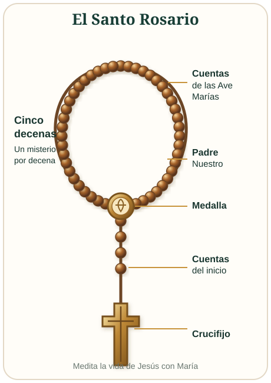

Tu avance, diario y repasos se guardan de forma privada en tu cuenta y se sincronizan entre tus dispositivos.
¿Aún no tienes cuenta?
¿Ya tienes cuenta?
Cada cuenta mantiene separados sus avances, notas y preferencias.
Preparando
Tu estudio de hoy
Paz y bien
Avanza con constancia, comprendiendo el texto dentro de la fe de la Iglesia.
✦0
días de racha
Día 1 de 36515–45 min
Creación, dignidad humana y caída
Génesis 1–3
✓
Avance anual0%0 de 365 sesiones
↻
Repasos pendientes0según tu aprendizaje
◷
Tiempo estudiado0 minsincronizado
Ruta anual · 73 libros
De Génesis a Apocalipsis
✧
Fundamento católico
Antes de comenzar
Aprende a leer cada pasaje atendiendo al género literario, el contexto y la unidad de toda la Escritura.
Ruta anual · Biblia católica
365 días de Génesis a Apocalipsis
Modo completo progresivo de 15–45 minutos o lectura esencial de 10–15 minutos.
0%
Completado Siguiente Pendiente
Biblia de estudio · 73 libros
Biblia católica completa
Selecciona un libro para consultar sus capítulos y notas esenciales.
Memoria y comprensión
Repasos programados
Las preguntas regresan en 1, 3, 7, 14 y 30 días según tus respuestas.
Oración contemplativa · Tradición católica
Santo Rosario Meditado
Con María, contempla los momentos centrales de la vida de Jesús. Lee, medita y ora sin prisa.
✝
Cómo rezar el Santo Rosario

Señal de la cruz. En el nombre del Padre, del Hijo y del Espíritu Santo. Amén.
Credo. Reza el Credo de los Apóstoles.
Inicio. Reza un Padre Nuestro, tres Ave Marías (por la fe, la esperanza y la caridad) y un Gloria.
Anuncia el misterio. Lee la cita bíblica y guarda un momento de silencio para meditar.
Cada decena. Reza un Padre Nuestro, diez Ave Marías y un Gloria. Puedes añadir la oración de Fátima.
Repite. Recorre los cinco misterios correspondientes al día.
Conclusión. Reza la Salve y termina con la señal de la cruz.
El Rosario es una oración meditativa: no se trata de terminar deprisa, sino de contemplar a Cristo con María.
Misterios del día
Misterios Gozosos
Primer misterioDecena 1 de 5
La Anunciación del Señor
Lucas 1, 26–38
Evangelio y meditación
Fruto del misterio
Reza las diez Ave Marías
0 de 10
Después de cada Ave María, marca una cuenta. Al completar las diez, continúa con el Gloria y avanza al siguiente misterio.
Comienza con el Padre Nuestro y después reza las diez Ave Marías.
Oraciones del Rosario
Consulta las oraciones
Selecciona una oración para leerla completa.
Día 1Modo completo
Creación, dignidad humana y caída
Génesis 1–3
Lectura del díaGénesis 1–3
Voz del dispositivo
Introducción espiritual incluidaSin comprobar
Los asteriscos pertenecen a la edición y remiten a sus notas de estudio. El audio omite los números de versículo. Gemini TTS y OpenAI TTS son voces generadas por IA; también puedes usar la voz gratuita de tu dispositivo. Texto para uso personal privado.
Objetivo
Qué aprenderás
Contexto
Para leer con atención
Ideas clave
Claves de comprensión
Biblia de Jerusalén
Notas de estudio
Catecismo de la Iglesia Católica
Conexiones doctrinales
1
Medita
2
Ora
3
Vive
Comprueba tu comprensión
Tres preguntas para afianzar lo aprendido
No hay límite de intentos. Los temas difíciles pasarán a tus repasos programados.